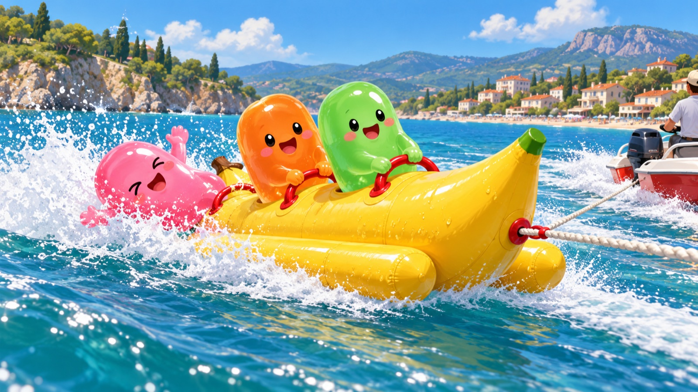
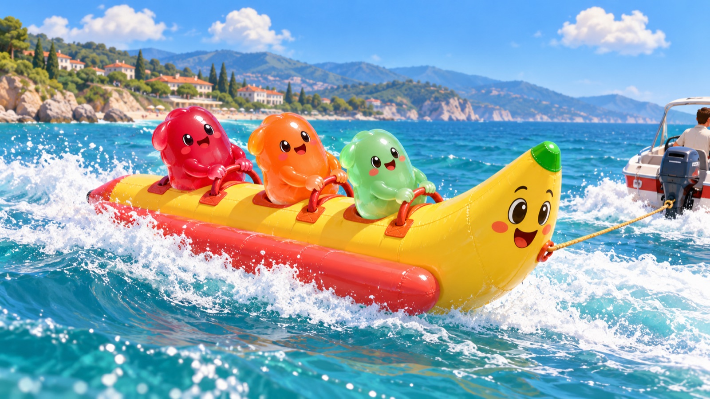
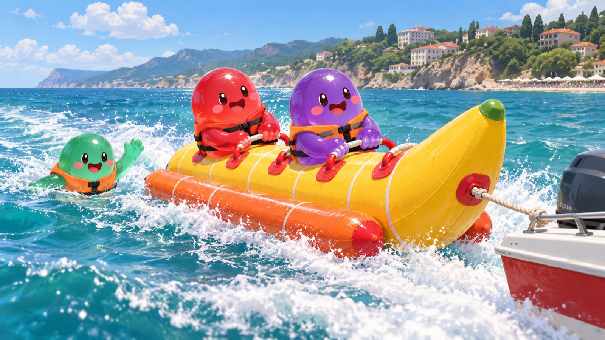

Банан за катером
Своя лодка рыбака тянет надувной банан на троих. Водитель резко поворачивает — банан заносит, седоков клонит. Седоки держатся на A/D. Упал — всплеск и 5 секунд на «E — обратно». Кто дольше продержался — строкой в чат.
Ты сидишь спереди (оранжевый). Метка на плашке уехала вправо — жми A, влево — D; дольше 0,4 с на краю — падаешь. В воде — E, пока не кончились 5 секунд. Водит бот: круг вокруг пирса и каждые 6 секунд — резкая «змейка».
Ползунки: скорость — подпрыгивание и задранный нос, поворот — крен наружу, крен седока — как его клонит (у края одна варежка отпускает ручку). «Упасть» — средний седок летит дугой в воду, «Обратно» — прыжок на место. Третий седок плавает рядом. Мышью — вращать.
Как играется
1Прицепить
Хозяин своей лодки за штурвалом жмёт B на малом ходу. У стоянки в чат уходит приглашение: «садись у стоянки за домом Семёна».
2Сесть
Любой игрок, без уровня рыбалки: подошёл по мосткам к банану — «E — сесть на банан». Мест три, банан должен стоять.
3Стряхнуть
Водитель газует и резко виляет. Банан по инерции уходит по дуге шире лодки — седоков клонит наружу. Заднего трясёт сильнее.
4Держаться
Плашка равновесия: метка уехала — жми клавишу с другой стороны (она подсвечена). Первые 2 секунды после посадки держишься крепко.
5Плюх!
Упал — дуга с кувырком, брызги, всплеск. 5 секунд на «E — обратно», иначе Гоша вылавливает и везёт на стоянку.
6Итог в чат
Причалили или все в воде — строка всем: «🍌 Банан за лодкой «Волжанка» Tired: дольше всех продержался Tester7 — 0:48 · Tester8 0:31 · падений: 3».
Концепты



Модель и анимации
| Модель | Blender без окна, скрипт tools/banana/build_banana.py → client/assets/banana/banana.glb, исходник tools/banana/banana.blend. Изогнутый корпус с «секциями», два поплавка, три ручки с накладками, лицо с обеих сторон носа, зелёный кончик, плодоножка, кольцо троса. |
|---|---|
| Треугольники и отрисовки | ~3 тыс. треугольников (бюджет предмета — 4 тыс.). Все бананы мира — 1 отрисовка (инстансы), все тросы — ещё 1. |
| Банан | Покачивание у причала · подпрыгивание на гребнях (чаще с ростом скорости) · нос задран на ходу · крен наружу в повороте · «отыгрывает» в другую сторону, когда седок упал · сминается под севшим · трос провисает, когда ослаб. |
| Седок | Сидит верхом и держится за ручку · клонится по крену · на краю «висит» — наружная варежка отпускает и машет · падает дугой с кувырком · плывёт по грудь в воде, гребёт и смотрит на банан · прыжок обратно на место. |
| Звук | Падение — обычный всплеск игры (тот же, что при падении с причала), возврат — тихий «плюх», как у русалки. |
Решить владельцу
Награда
Сейчас без жетонов: иначе друзья накручивают, сидя за медленной лодкой. Можно потом — +1 🪙 за каждые 10 с без падения седоку и водителю за каждого стряхнутого (до 12 🪙/мин).
«Любая лодка»
Банан цепляется к своим лодкам рыбаков — их водят игроки. Катера регаты — гонка на одного, «Ласточка» и «Удалая» ходят сами по пути: им некому «резко поворачивать».